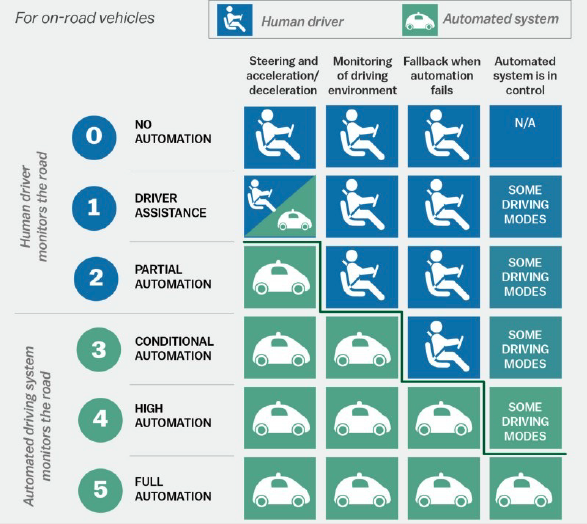
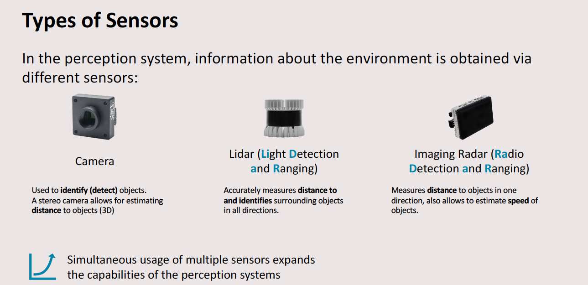
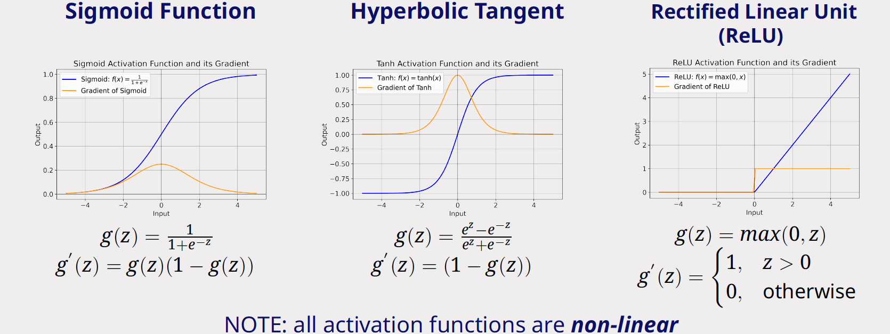
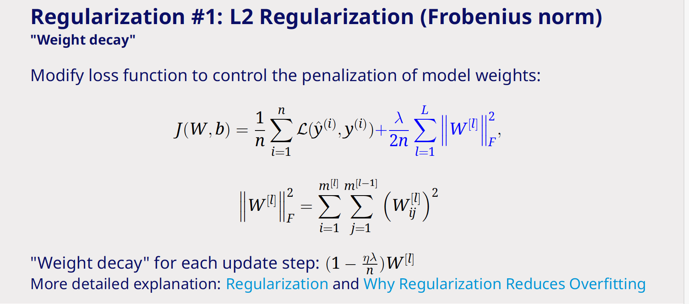
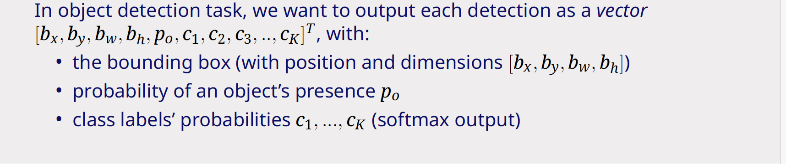
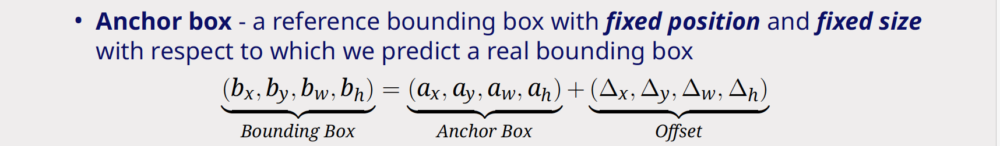
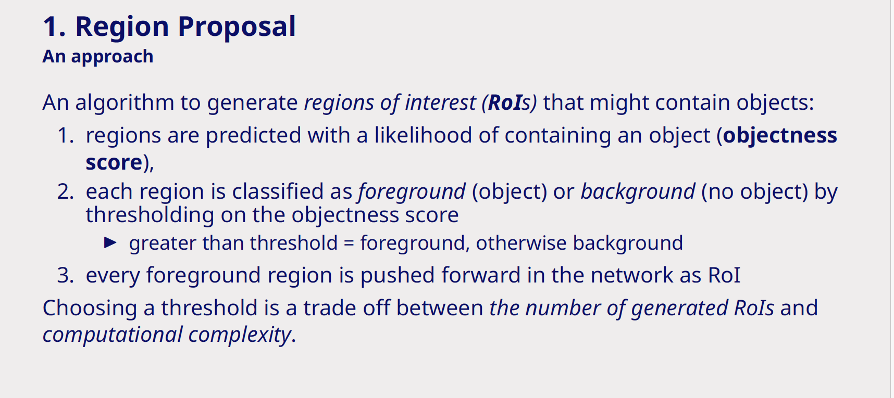
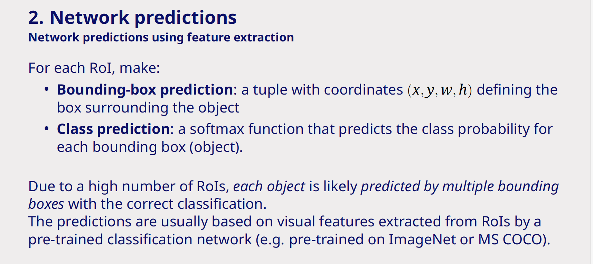
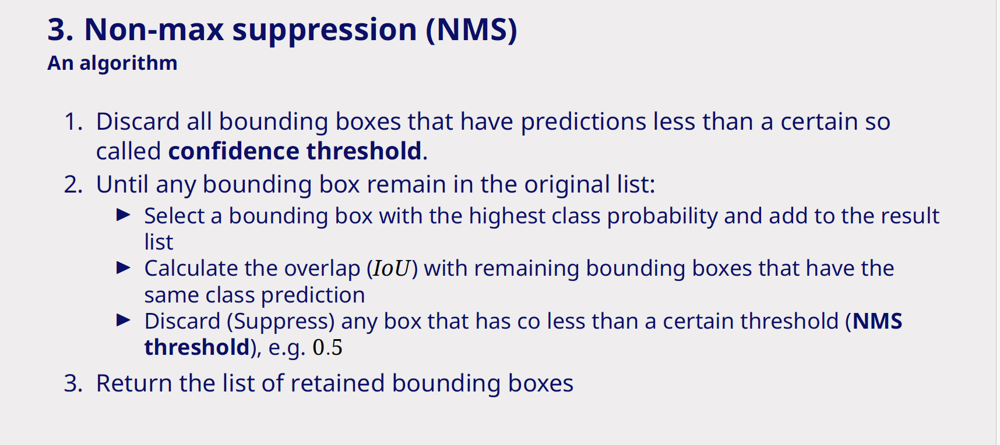

Perception
Lecture 2 Automotive sensors
This contains only the notes that was mentioned that should be studied. However the levels of automated driving is also added.

Also just to be sure some types of sensors.
Types of analysis
Classification: - Determine class of the object within its general category
Detection: - Find the location of objects from a general category in sensor data
Ranging: - Estimate distance of a detected object
Recognition: - Find exactly the same object instance in sensor data
Tracking: - Estimate (and predict) path of a detected object - Recognition over time
Metrics
Precision
precision is the percentage of correct detections. \[ Prec = \frac{TP}{TP+FP} \]
Recall
Recall is the percentage of how many of the postives it could find out of the dataset \[ Rec= \frac{TP}{TP + FN} \]
F1-score
The F1-score is a trade off between precision and recall \[ F_1 = \frac{2}{\frac{1}{Rec}+\frac{1}{Prec}}= \frac{2*Rec*Prec}{Rec+Prec} = \frac{2|TP|}{2|TP|+|FP|+|FN|} \]
Lecture 3 Introduction to deep learning
When the feature computation and classifier are designed manually this is also called model-based. Which has various problems like occlusions, lighting etc. In deep learning the feature computation and the classifier are trained. It is now data-driven
Some activation functions are given below:

The binary cross entropy loss is given by: \[ \lambda = y \cdot log(f(x)) + (1-y) \cdot log(1-f(x)) \]
Overfitting can be reduced by using L2 Regularization (Frobenius norm), this just the same as ridge idk why it is called like that.

Methods to reduce overfitting are: - Dropout - Regularization - Early stopping
Lecture 4 Limitations of datasets & object detection
Any dataset always represents a limited view on / only a sample of on the real world and therefore hard to generalize. Therefore partly data augmentation exists, one of these is shearing in which you hold the axis perpendiculr but place the corner of the image in a different position. This way you simulate camera angles and such.
The pooling operation has the following results: - Promotes dominat features - introduces translational invariance -Suppresses noise - reduces dimensionality
The softmax function is given as: \[ softmax(y)=\frac{e^y}{\sum e^y} \]
In detection you want to have the follwing output vector:

However it is difficult to predict: - different absolute positsions of objects - different shapes (aspect ratio) of objects that may also overlay
Therefore it is easier to predict an offset in position and size relative to a predefined, reference bounding (anchor) box. So you get:

Mostly DNN networks contain 3 components: - region proposals - Network predictions using feature extraction - Non-maximum suppressions (cleaning up)



Evaluation metrics
IoU
Intersection over union. \[ \text{IoU}(B_P, B_{GT}) = J(B_P, B_{GT}) = \frac{|B_P \cap B_{GT}|}{|B_P \cup B_{GT}|} \]
Where: * \(B_P\): Predicted Bounding Box * \(B_{GT}\): Ground Truth Bounding Box * \(B_P \cap B_{GT}\): Area of Overlap (Intersection) * \(B_P \cup B_{GT}\): Area of Encompassed Region (Union)
Average precision
this is the area under the precision-recall curve. \[AP = \int_{r=0}^{1} p(r) \, dr\] in which p(r) is based on the confidence threshold
Mean average precision
This is the same as the average precision but now the mean is taken over the classes \[ mAP= \frac{1}{K}= \sum^K_{c=1}AP(c) \]
You can calculate the mAP for different levels of IoU threshold. Then we get e.g. mAP@0.5, mAP@0.75, which is also noted as \(AP_{50}\). Sometimes mAP is reported as the mean of mAP over different IoU thresholds. mAP@[.50:.95] or mAP@[.50:.05:.95]